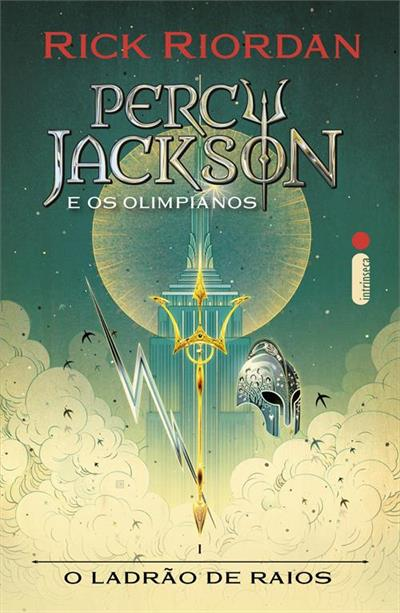
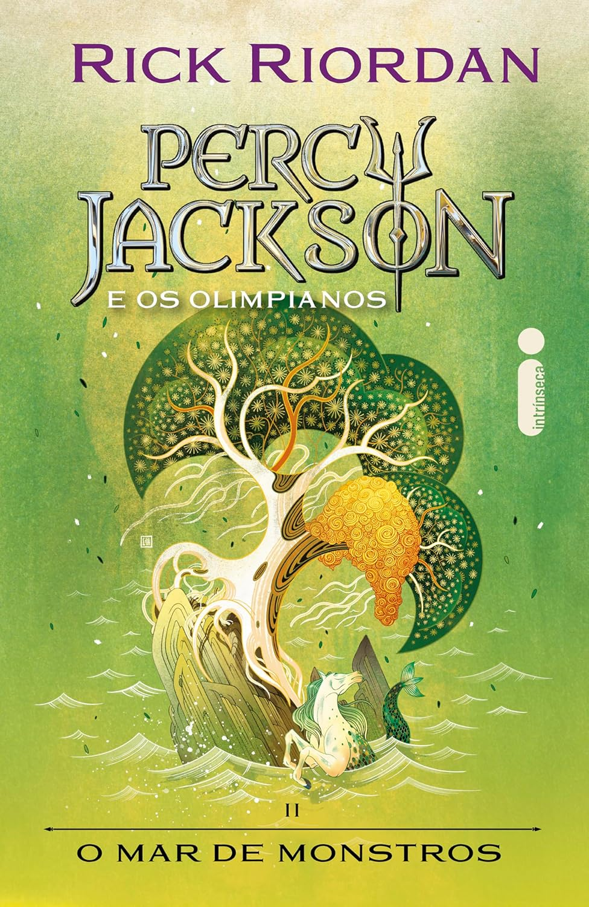
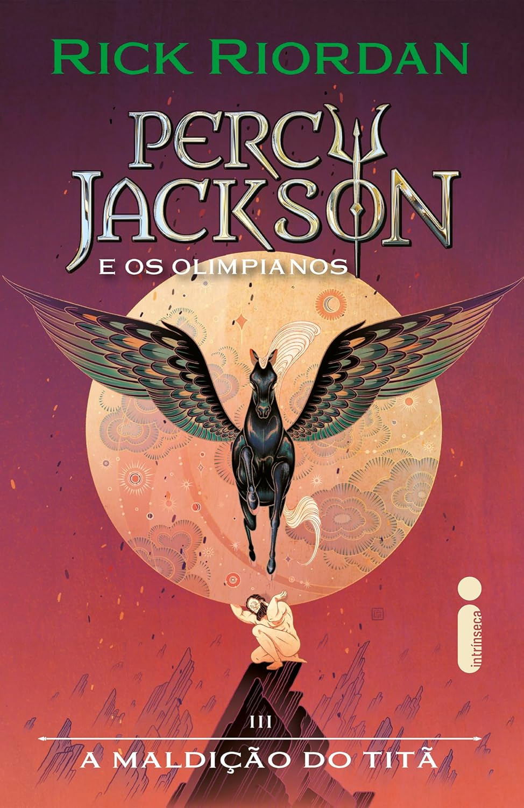
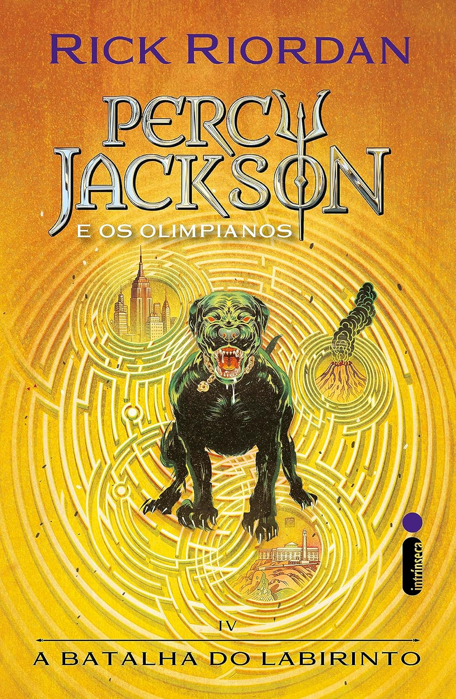
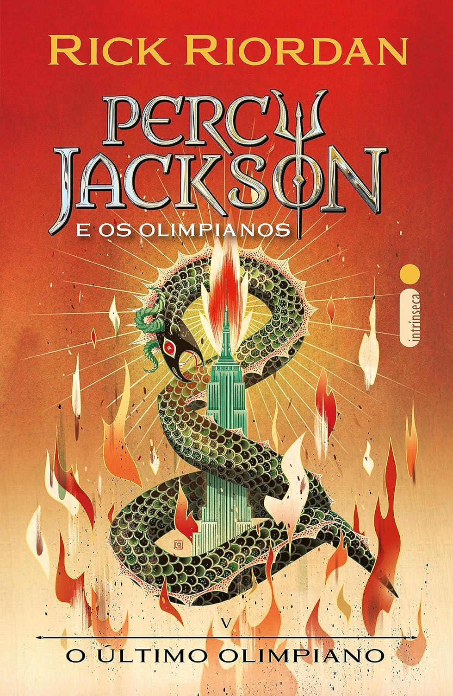

Resumo do livro:
Percy Jackson e o Ladrão de Raios é uma obra fenomenal que consegue a proeza de revitalizar a
mitologia grega clássica com uma roupagem moderna, vibrante e extremamente inteligente. A genialidade da narrativa de Rick Riordan
reside em transformar as inseguranças e desafios de um jovem de doze anos em uma jornada heroica de autodescoberta, onde o TDAH e
a dislexia são ressignificados como sinais de uma linhagem divina e instintos de sobrevivência. É uma leitura absolutamente viciante,
que equilibra um humor ácido e sagaz com sequências de ação de tirar o fôlego, tornando-se um convite irresistível para leitores que
buscam uma história sobre coragem, pertencimento e o peso do destino, provando que os mitos antigos continuam mais vivos e perigosos
do que nunca nos dias de hoje.

Resumo do livro:
Percy Jackson e o Mar de Monstros é uma continuação extraordinária que eleva ainda mais o patamar da série ao
mergulhar em uma odisseia marítima repleta de perigos mitológicos e dilemas emocionais profundos. A genialidade de Rick Riordan brilha
ao expandir o universo dos semideuses, introduzindo personagens cativantes e explorando a complexidade dos laços de fraternidade e lealdade
em uma corrida desesperada para salvar o Acampamento Meio-Sangue e resgatar Grover. É uma leitura eletrizante que combina perfeitamente
o humor sagaz da saga com momentos de tensão genuína no Triângulo das Bermudas, tornando-se uma experiência viciante que prova que o verdadeiro
heroísmo reside na aceitação e na coragem de lutar pela família que escolhemos, mesmo quando o destino parece estar contra nós.

Resumo do livro:
Percy Jackson e a Maldição do Titã é uma obra magistral que marca um ponto de virada decisivo na série, elevando
a narrativa a um patamar de maturidade e profundidade emocional arrebatador. A genialidade de Rick Riordan se manifesta ao equilibrar a
ação frenética com temas mais densos como o sacrifício pessoal, a perda e o peso inexorável das profecias, enquanto Percy e seus aliados
enfrentam uma jornada invernal desesperada para resgatar Annabeth e a deusa Ártemis. É uma leitura absolutamente impactante que expande
o panteão mitológico com a introdução das Caçadoras e dos misteriosos irmãos Di Angelo, mantendo o humor sagaz mas temperando-o com uma
urgência épica que prepara o terreno para o confronto final. O livro é um triunfo narrativo que cativa pela vulnerabilidade dos personagens
e pela construção de um suspense impecável, consolidando-se como um volume indispensável e emocionante que ressoa no coração do leitor
muito além da última página.

Resumo do livro:
Percy Jackson e a Batalha do Labirinto é uma narrativa monumental que expande drasticamente os horizontes da saga
ao levar o leitor para as profundezas claustrofóbicas e mutáveis do Labirinto de Dédalo. A genialidade de Rick Riordan nesta quarta obra
reside na habilidade de fundir o suspense de um cenário que reflete a mente de seu criador com o amadurecimento emocional genuíno de Percy
e seus aliados, cujas responsabilidades atingem um ponto crítico. É uma leitura de tirar o fôlego, repleta de reviravoltas engenhosas, onde
o misticismo da busca pelo deus Pan se choca com a ameaça sombria da ressurreição de Cronos. Este livro é um marco de complexidade e ação que
consolida a série como um fenômeno atemporal, preparando o palco de forma magistral para o épico confronto final no Olimpo.

Resumo do livro:
Percy Jackson e o Último Olimpiano é o desfecho épico e absolutamente arrebatador que consagra a saga como um dos maiores
fenômenos literários da nossa era. A genialidade de Rick Riordan atinge seu ápice ao transformar a moderna Manhattan em um campo de batalha mitológico
de proporções bíblicas, onde o destino do Olimpo não repousa sobre o poder dos deuses, mas sobre as escolhas humanas e o peso da Grande Profecia.
É uma obra de uma intensidade emocional visceral, que equilibra sequências de ação de tirar o fôlego com reflexões profundas sobre sacrifício, lealdade
e a redenção de heróis esquecidos. A narrativa amarra cada ponta solta com uma elegância rara, entregando um final que é, ao mesmo tempo, uma celebração
da amizade e um lembrete poderoso de que a verdadeira coragem reside em enfrentar o próprio destino, por mais sombrio que ele pareça. É uma leitura obrigatória
e emocionante que prova, de uma vez por todas, que Percy Jackson não é apenas uma história para jovens, mas um mito moderno indispensável sobre o que significa,
de fato, pertencer a algum lugar.